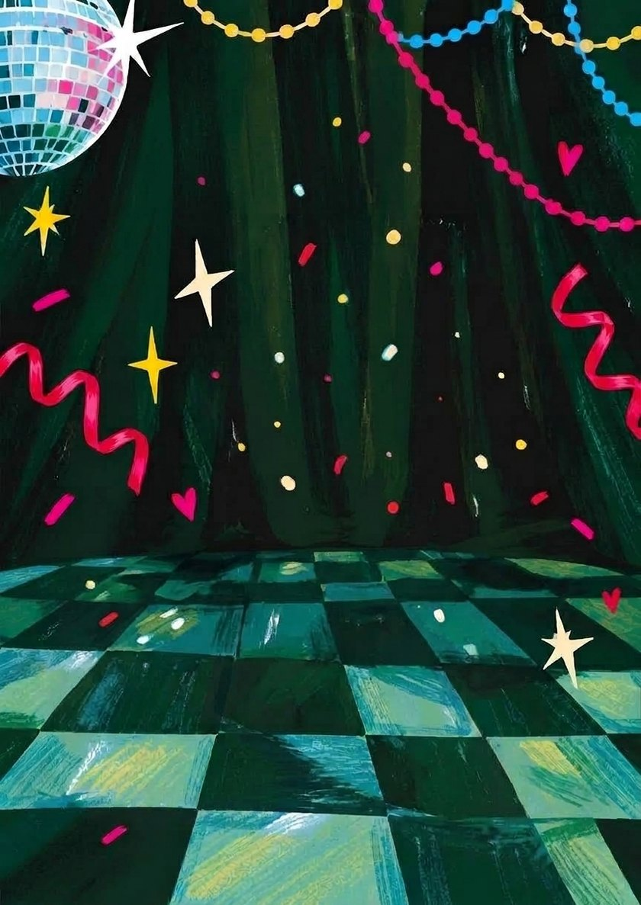
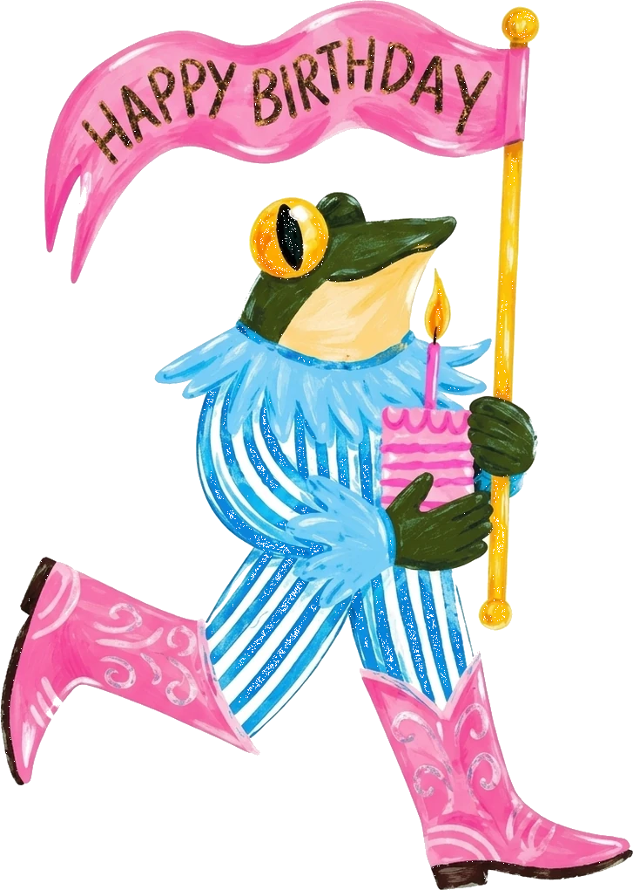
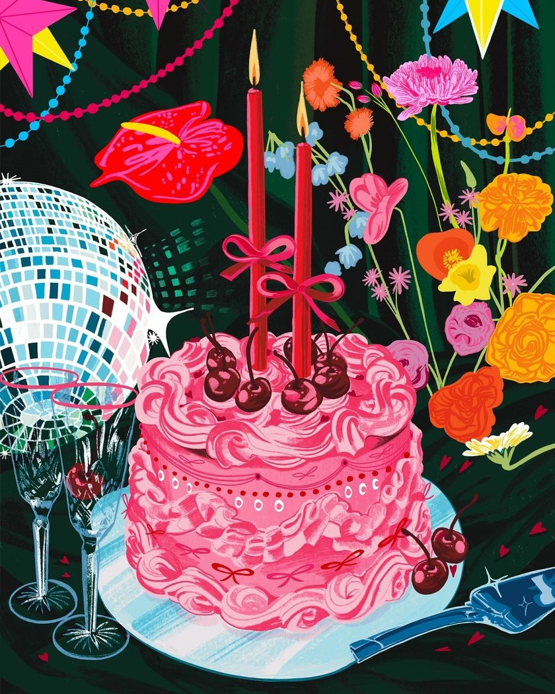
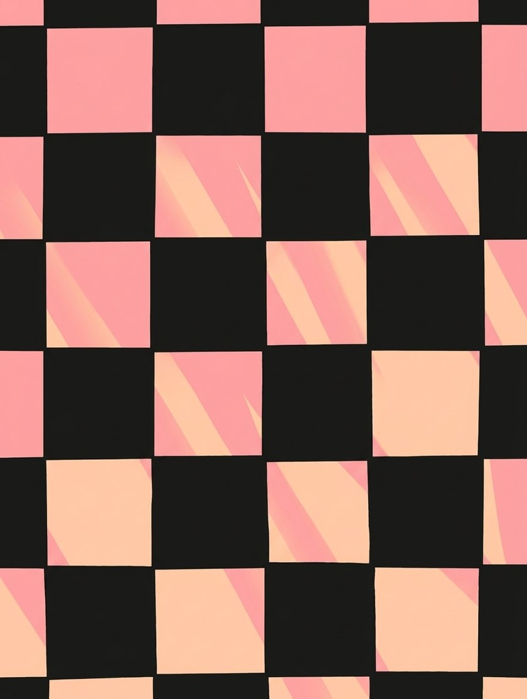
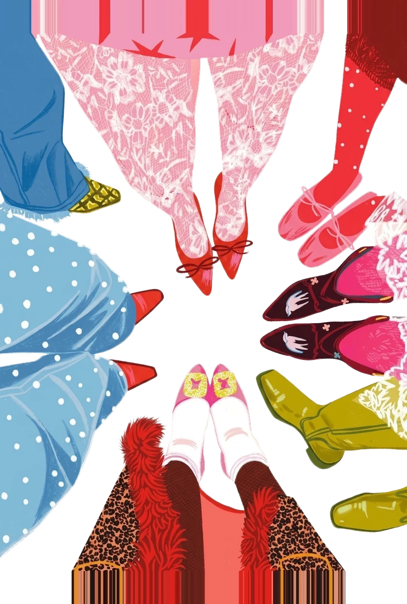
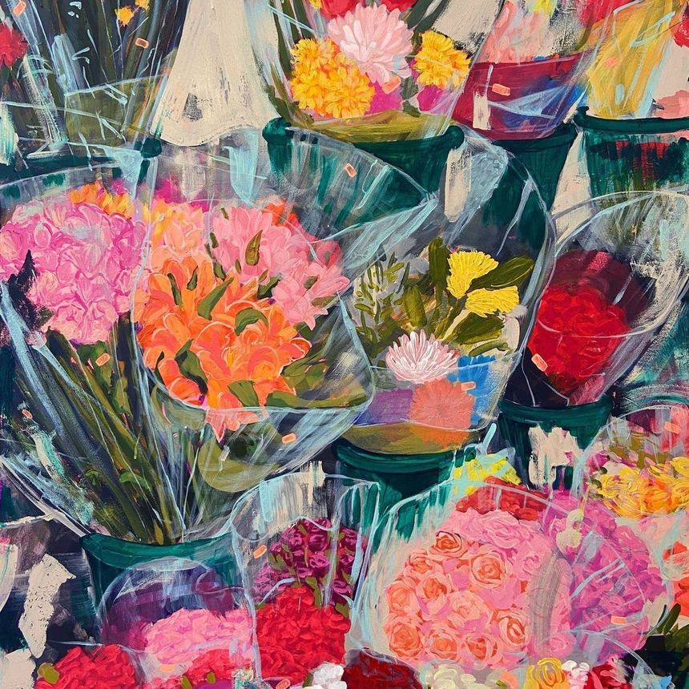
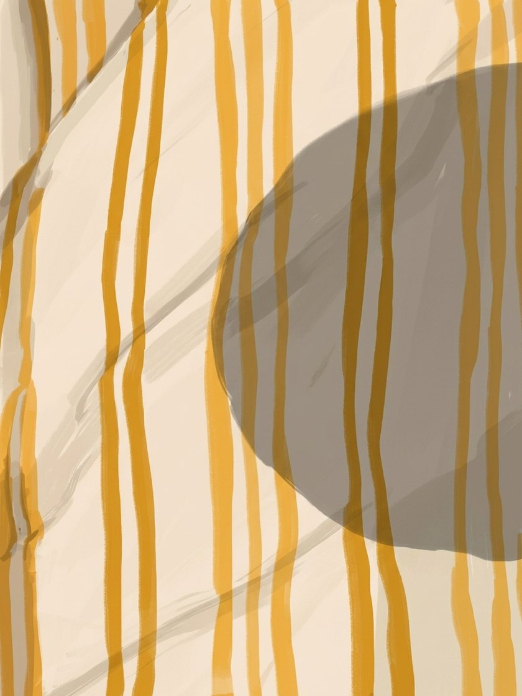
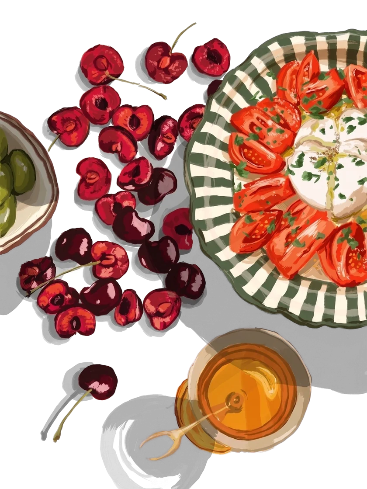
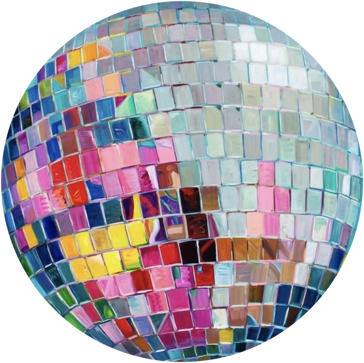
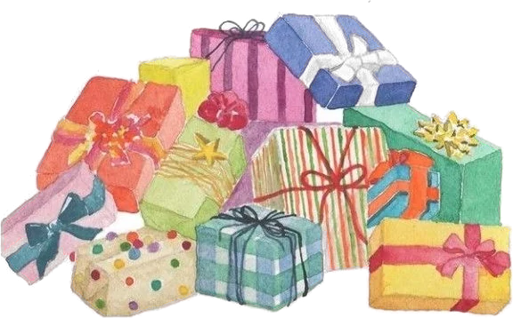

В этом году я праздную свой 23‑й день рождения)
Будет очень много цветов, еды и людей, которых я люблю! И я буду очень рада, если ты будешь в этот день рядом со мной
октябрь
- 1
- 2
- 3 — суббота, наш день
- 4


Где и когда

3 октября
суббота
17:00
ресторан
Тот самый повод принарядиться:
Надевай каблуки, платье или костюм — будем создавать атмосферу праздника с помощью образов!


люблю зелёный лягушачий. беспроигрышный вариант — добавить зелёный акцент
А также возьми с собой удобную сменную одежду, если настрой на продолжение праздника сохранится, но уже в более комфортной обстановке)

Есть идея!
Чтобы не покупать букетов — возьми по одному-трём цветкам, с которыми я у тебя ассоциируюсь. Мне будет интересно посмотреть)
Хотя от букета я бы тоже не отказалась)
Начнём мы в ресторане
Приходи ко времени, там перекусим, и чуть позже продолжим по адресу Новая, 14. Там поиграем в игры, поболтаем по душам и просто приятно проведём время.
Хочу приготовить пару блюд, поэтому ниже пара вопросов


Отправляю…
Похоже, пропал интернет. Скопируй ответы и пришли мне в чат — запишу руками.
Про подарки

Кстати, по поводу подарков! Чтобы не ломать голову — прикрепляю вишлист.
Там есть возможность забронировать подарок, что упрощает выбор

от меня лично